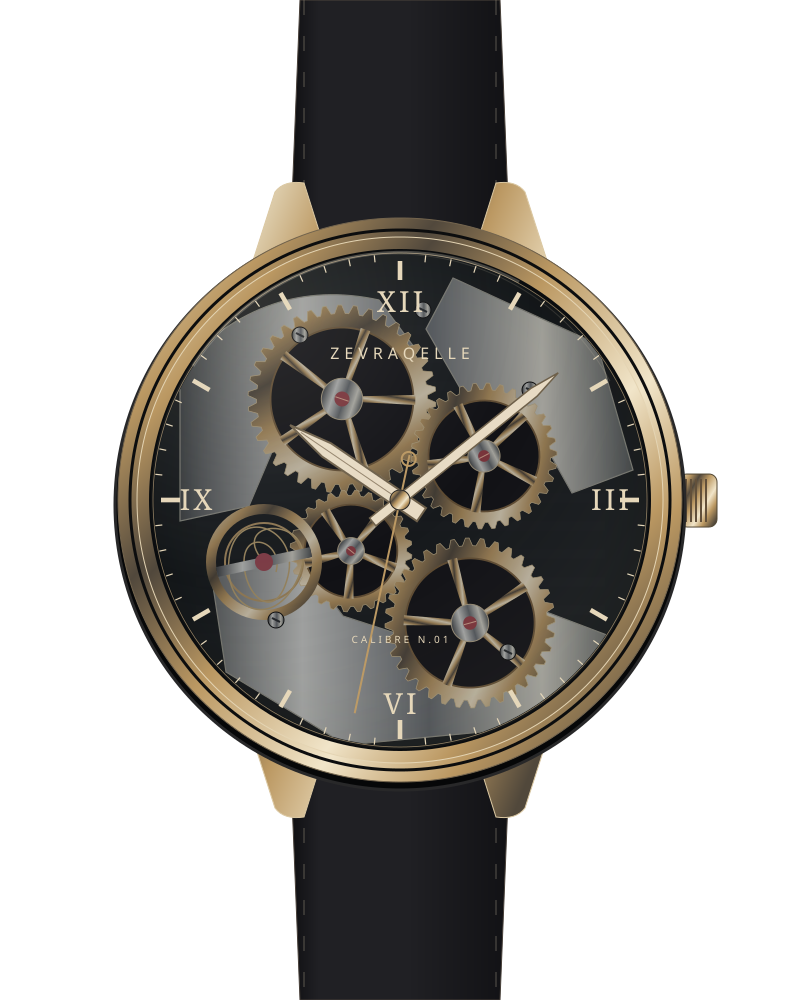

01 — THE SURFACE
Time has
an inner world.
Every day we see the hands.
The real life runs deeper.
02 — BENEATH THE SURFACE
Open it.
Understand it.
As you scroll, the dial gives way to a train of wheels. One motion passes to the next until it becomes a second.
↗ The smallest part has its place.
03 — A LIVING RHYTHM
Nothing
by chance.
Fine bridge lines, warm metal, an open balance spring. Study each layer at your own pace.
Explore the calibre ↓NOCTURNE · N.01HAND-WOUND

Scroll, swipe sideways or use the arrow keys.
Static view — the movement is loading.
Time on your device